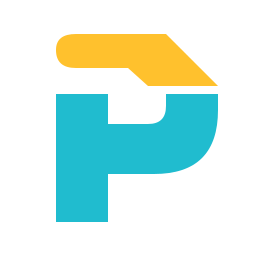
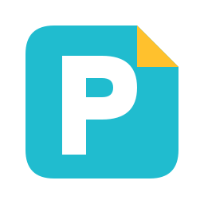

A · 翻角 P
折角最明确，纸页与 P 一眼能联系起来。
PASTEPANDA / FOLD P EXPLORATION
同一个品牌方向：纸页表达复制与知识，P 呼应 PastePanda，青黄双色延续现有图标。下面探索轮廓与折法。
折角最明确，纸页与 P 一眼能联系起来。
一根粗纸带围成 P，圆润、紧凑，保留现有双环的流动感。
两张纸页前后叠放。收集与积累的含义更强，仍只保留两个色块。

黄色页头与青色主体之间留一道开口，表达内容进入和归档。
底部纸带向内折回，轮廓更独特，也呼应内容反复调用。

把 P 留在纸页中间。整体像一枚收纳印记，桌面图标轮廓最稳定。
优先看 A、B、E。A 的纸页折角最直观；B 更接近现有图标的圆环语言；E 的下方回折最有个性。C 突出收集，D 突出内容进入，F 适合完整桌面图标。每款均为透明背景 SVG，并附 PNG 与实际小尺寸预览。